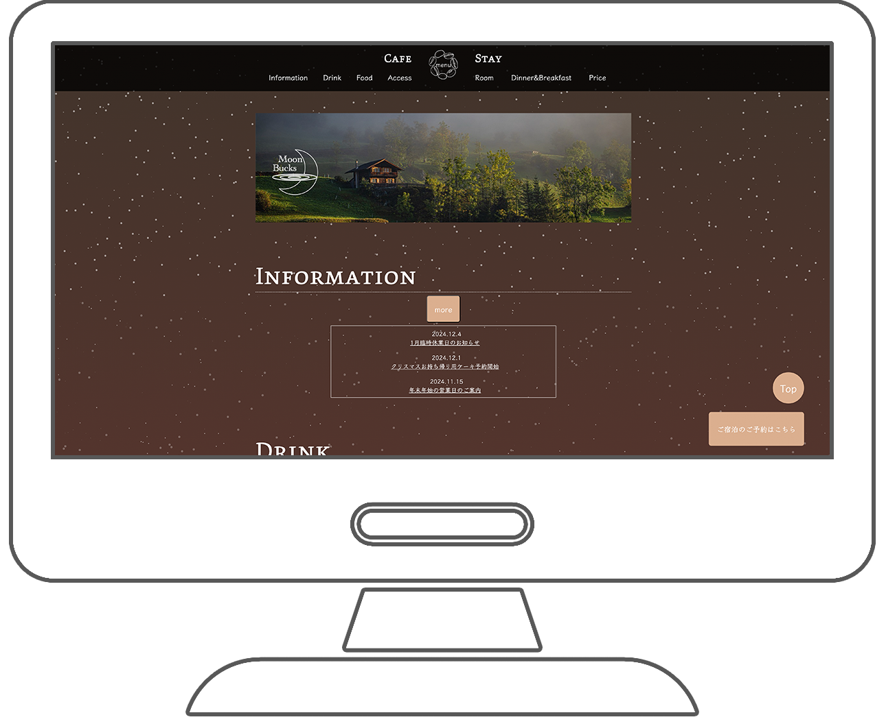
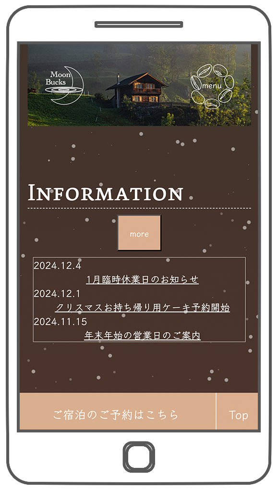

M
o
o
n
B
u
c
k
s


制作期間
企画/3日 デザイン/2日 コーディング/3週間
使用ツール
Vscode,Photoshop,Affinity Designer2,Procreate
使用言語
HTML,CSS,SCSS,JavaScript
ターゲット
忙しい日常を送る30〜50代男女。
Webサイト制作目的
自然の中でゆったりとした時間が過ごせ、癒される空間のイメージを提供することで集客を目指す。
デザイン
- 温泉に浸かるようにリラックスして欲しいという思いから月が温泉に浸かっているようなロゴ、アニメーションを作成。
- 背景にゆらゆらと立ち上る点をあしらい、星空と湯気の立ちのぼりを掛け合わせたデザインを使用。
- Stayのページでは、ページが開かれる際に霧が晴れ雲海が広がるようなイメージを表現。
設計上工夫した点
宿泊予約フォームではユーザーが使用しやすいよう、エラーメッセージのカスタマイズや郵便番号による住所の自動入力機能をJavaScriptにて実装。